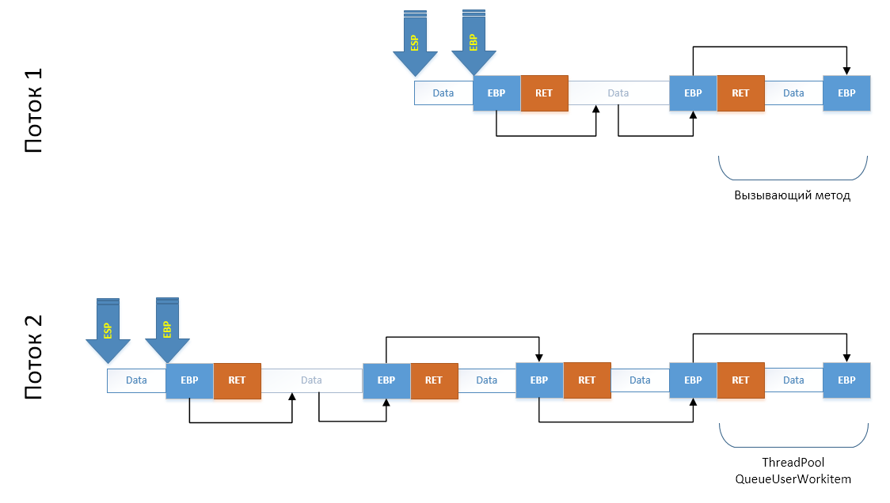

Стек потока
Базовая структура, платформа x86
Существует область памяти, про которую редко заходит разговор. Однако эта область является, возможно, основной в работе приложения. Самой часто используемой, достаточно ограниченной с моментальным выделением и освобождением памяти. Область эта называется "стек потока". Причём поскольку указатель на него кодируется по своей сути регистрами процессора, которые входят в контекст потока, то в рамках исполнения любого потока стек потока свой. Зачем он необходим?
Итак, разберём элементарный пример кода:
void Method1() { Method2(123); } void Method2(int arg) { // ... }
В данном коде не происходит ничего примечательного, однако не будем его пропускать, а наоборот: посмотрим на него максимально внимательно. Когда любой Method1 вызывает любой Method2, то абсолютно любой такой вызов (и не только в .NET, но и в других платформах) осуществляет следующие операции:
- Первое, что делает код, скомпилированный JIT'ом: он сохраняет параметры метода в стек (начиная с третьего). При этом первые два передаются через регистры. Тут важно помнить, что первым параметром экземплярных методов передаётся указатель на тот объект, с которым работает метод. Т.е. указатель
this. Так что в этих (почти всех) случаях для регистров остаётся всего один параметр, а для всех остальных - стек; - Далее компилятор ставит инструкцию вызова метода
call, которая помещает в стек адрес возврата из метода: адрес следующей заcallинструкцией. Таким образом любой метод знает, куда ему необходимо вернуться, чтобы вызывающий код смог продолжить работу; - После того как все параметры переданы, а метод вызван, нам надо как-то понять, как стек восстановить в случае выхода из метода, если мы не хотим заботиться о подсчёте занимаемых нами в стеке байтов. Для этого мы сохраняем значение регистра EBP, который всегда хранит указатель на начало текущего кадра стека (т.е. участка, где хранится информация для конкретного вызванного метода). Сохраняя при каждом вызове значение этого регистра, мы тем самым фактически создаём односвязный список стековых кадров. Но прошу заметить, что по факту они идут чётко друг за другом, без каких-либо пробелов. Однако для упрощения освобождения памяти из-под кадра и для отладки приложения (отладчик использует эти указатели, чтобы отобразить Stack Trace) строится односвязный список;
- Последнее, что надо сделать при вызове метода, - выделить участок памяти под локальные переменные. Поскольку компилятор заранее знает, сколько её понадобится, то делает он это сразу, сдвигая указатель на вершину стека (SP/ESP/RSP) на необходимое количество байт;
- И наконец, на пятом этапе выполняется код метода, полезные операции;
- Когда происходит выход из метода, то вершина стека восстанавливается из EBP - места, где хранится начало текущего стекового кадра;
- Далее, последним этапом осуществляется выход из метода через инструкцию
ret. Она забирает со стека адрес возврата, заботливо оставленный ранее инструкциейcallи делаетjmpпо этому адресу.
Те же самые процессы можно посмотреть на изображении:

Также замечу, что стек "растёт", начиная со старших адресов и заканчивая младшими, т.е. в обратную сторону.
Глядя на все это, невольно приходишь к выводу, что если не большинство, то минимум половина всех операций, которыми занимается процессор - это обслуживание структуры программы, а не её полезной нагрузки. Т.е. обслуживание вызовов методов, проверки типов на возможность привести один к другому, компиляцию Generic вариаций, поиск методов в таблицах интерфейсов... Особенно если мы вспомним, что большинство современного кода написано с подходом работы через интерфейсы, разбивку на множество пусть маленьких, но выполняющих каждый - своё - методов… А работа при этом часто идёт с базовыми типами и приведением типов то к интерфейсу, то к наследнику. При всех таких входящих условиях вывод о расточительности инфраструктурного кода вполне может назреть. Единственное, что я могу вам на это все сказать: компиляторы, в том числе и JIT, обладают множеством техник, позволяющим им делать более продуктивный код. Где можно - вместо вызова метода вставляется его тело целиком, а где возможно вместо поиска метода в VSD интерфейса осуществляется его прямой вызов. Что самое грустное, инфраструктурную нагрузку очень сложно замерить: надо чтобы JITter либо какой-либо компилятор вставлял бы какие-то метрики до и после мест работы инфраструктурного кода. Т.е. до вызова метода, а внутри метода - после инициализации кадра стека. До выхода из метода, после выхода из метода. До компиляции, после компиляции. И так далее. Однако, давайте не будем о грустном, а поговорим лучше о том, что мы можем с вами сделать с полученной информацией.
Немного про исключения на платформе x86
Если мы посмотрим внутрь кода методов, то мы заметим ещё одну структуру, работающую со стеком потока. Посудите сами:
void Method1() { try { Method2(123); } catch { // ... } } void Method2(int arg) { Method3(); } void Method3() { try { //... } catch { //... } }
Если исключение возникнет в любом из методов, вызванных из Method3, то управление будет возвращено в блок catch метода Method3. При этом если исключение обработано не будет, то его обработка начнётся в методе Method1. Однако если ничего не случится, то Method3 завершит свою работу, управление перейдёт в метод Method2, где также может возникнуть исключение. Однако по естественным причинам обработано оно будет не в Method3, а в Method1. Вопрос такого удобного автоматизма заключается в том, что структуры данных, образующие цепочки обработчиков исключений, также находятся в стековом кадре метода, где они объявлены. Про сами исключения мы поговорим отдельно, а здесь скажу только, что модель исключений в .NET Framework CLR и в Core CLR отличается. CoreCLR вынуждена быть разной на разных платформах, а потому модель исключений там другая и представляется в зависимости от платформы через прослойку PAL (Platform Adaption Layer) различными имплементациями. Большому .NET Framework CLR это не нужно: он живёт в экосистеме платформы Windows, в которой есть уже много лет общеизвестный механизм обработки исключений, который называется SEH (Structured Exception Handling). Этот механизм используется практически всеми языками программирования (при конечной компиляции), потому что обеспечивает сквозную обработку исключений между модулями, написанными на различных языках программирования. Работает это примерно так:
- При вхождении в блок try на стек кладётся структура, которая первым полем указывает на предыдущий блок обработки исключений (например, вызывающий метод, у которого также есть try-catch), тип блока, код исключения и адрес обработчика;
- В TEB потока (Thread Environment Block, по сути - контекст потока) меняется адрес текущей вершины цепочки обработчиков исключений на тот, что мы создали. Таким образом, мы добавили в цепочку наш блок.
- Когда try закончился, производится обратная операция: в TEB записывается старая вершина, снимая таким образом наш обработчик из цепочки;
- Если возникает исключение, то из TEB забирается вершина и по очереди по цепочке вызываются обработчики, которые проверяют, подходит ли исключение конкретно им. Если да, выполняется блок обработки (например, catch).
- В TEB восстанавливается тот адрес структуры SEH, который находится в стеке ДО метода, обработавшего исключение.
Как видите, совсем не сложно. Однако вся эта информация также находится в стеке.
Базовые сведения про платформы x64, AMD64 [In Progress]
TODO
Исключения на платформах x64, AMD64 [In Progress]
TODO
Совсем немного про несовершенство стека потока
Давайте немного подумаем о вопросе безопасности и возможных проблемах, которые чисто теоретически могут возникнуть. Для этого давайте ещё раз глянем на структуру стека потока, которая по своей сути - обычный массив. Диапазон памяти, в котором строятся фреймы, организован так, что он растёт с конца в начало. Т.е. более поздние фреймы располагаются по более ранним адресам. Так же, как уже было сказано, фреймы связаны односвязным списком. Это сделано потому, что размер фрейма не является фиксированным и должен быть "считан" любым отладчиком. Процессор при этом не разграничивает фреймы между собой: любой метод по своему желанию может считать всю область памяти целиком. А если учесть при этом, что мы находимся в виртуальной памяти, которая поделена на участки, являющиеся реально выделенной памятью, то можно при помощи специальной функции WinAPI по любому адресу со стека получить диапазон выделенной памяти, в которой этот адрес находится. Ну а разобрать односвязный список - дело техники:
// переменная находится в стеке
int x;
// Забрать информацию об участке памяти, выделенной под стек
MEMORY_BASIC_INFORMATION *stackData = new MEMORY_BASIC_INFORMATION();
VirtualQuery((void *)&x, stackData, sizeof(MEMORY_BASIC_INFORMATION));
Это даёт нам возможность получить и модифицировать все данные, которые находятся в качестве локальных переменных у методов, которые нас вызвали. Если приложение никак не настраивает песочницу, в рамках которой вызываются сторонние библиотеки, расширяющие функционал приложения, то сторонняя библиотека сможет утащить данные, даже если тот API, который вы ей отдаёте, этого не предполагает. Методика эта может показаться вам надуманной, однако в мире C/C++, где нет такой прекрасной вещи как AppDomain с настроенными правами атака по стеку - это самое типичное, что только можно встретить из взлома приложений. Мало того, можно через рефлексию посмотреть на тип, который нам необходим, повторить его структуру у себя, и, пройдя по ссылке со стека на объект, заменить адрес VMT на наш, перенаправив таким образом всю работу с конкретным экземпляром к нам. SEH, кстати говоря, также вовсю используется для взлома приложений. Через него вы также можете, меняя адрес обработчика исключения, заставлять ОС выполнить вредоносный код. Но вывод из всего этого очень простой: всегда настраивайте песочницу, когда хотите работать с библиотеками, расширяющими функционал вашего приложения. Я, конечно же, имею ввиду всяческие плагины, аддоны и прочие расширения.
Большой пример: клонирование потока на платформе х86
Чтобы запомнить все, что мы прочитали до мельчайших подробностей, надо зайти к вопросу освещения какой-либо темы с нескольких сторон. Казалось бы, какой пример можно построить для стека потока? Вызвать метод из другого? Магия... Конечно же, нет: это мы делаем ежедневно по много раз. Вместо этого мы склонируем поток исполнения. Т.е. сделаем так, чтобы после вызова определённого метода у нас вместо одного потока оказалось бы два: наш и новый, но продолжающий выполнять код с точки вызова метода клонирования так, как будто он сам туда дошёл. А выглядеть это будет так:
void MakeFork() { // Для уверенности что все склонировалось мы делаем локальные переменные: // В новом потоке их значения обязаны быть такими же как и в родительском var sameLocalVariable = 123; var sync = new object(); // Замеряем время var stopwatch = Stopwatch.StartNew(); // Клонируем поток var forked = Fork.CloneThread(); // С этой точки код исполняется двумя потоками. // forked = true для дочернего потока, false для родительского lock(sync) { Console.WriteLine("in {0} thread: {1}, local value: {2}, time to enter = {3} ms", forked ? "forked" : "parent", Thread.CurrentThread.ManagedThreadId, sameLocalVariable, stopwatch.ElapsedMilliseconds); } // При выходе из метода родительский вернёт управления в метод, // который вызвал MakeFork(), т.е. продолжит работу как ни в чем ни бывало, // а дочерний завершит исполнение. } // Примерный вывод: // in forked thread: 2, local value: 123, time to enter = 2 ms // in parent thread: 1, local value: 123, time to enter = 2 ms
Согласитесь, концепт интересный. Конечно же, тут можно много спорить про целесообразность таких действий, но задача этого примера - поставить жирную точку в понимании работы этой структуры данных. Как же сделать клонирование? Для ответа на данный вопрос надо ответить на другой вопрос: что вообще определяет поток? А поток определяют следующие структуры и области данных:
- Набор регистров процессора. Все регистры определяют состояние потока исполнения инструкций: от адреса текущей инструкции исполнения до адресов стека потока и данных, которыми он оперирует;
- Thread Environment Block или TIB/TEB, который хранит системную информацию по потоку, включая адреса обработчиков исключений;
- Стек потока, адрес которого определяется регистрами SS:ESP;
- Платформенный контекст потока, который содержит локальные для потока данные (ссылка идёт из TIB)
Ну и наверняка что-то ещё, о чем мы можем не знать. Да и знать нам всего для примера нет никакой надобности: в промышленное использование данный код не пойдёт, а скорее будет служить нам отличным примером, который поможет разобраться в теме. А потому он не будет учитывать всего, а только самое основное. А для того чтобы он заработал в базовом виде, нам понадобится скопировать в новый поток набор регистров (исправив SS:ESP, т.к. стек будет новым), а также подредактировать сам стек, чтобы он содержал ровно то что нам надо.
Итак. Если стек потока определяет, по сути, какие методы были вызваны и какими данными они оперируют, то получается что по идее, меняя эти структуры, можно поменять как локальные переменные методов, так и вырезать из стека вызов какого-то метода, поменять метод на другой или же добавить в любое место цепочки свой. Хорошо, с этим определились. Теперь давайте посмотрим на некий псевдокод:
void RootMethod()
{
MakeFork();
}
Когда вызовется MakeFork(), что мы ожидаем с точки зрения стек трейсов? Что в родительском потоке все останется без изменений, а дочерний будет взят из пула потоков (для скорости), в нем будет сымитирован вызов метода MakeFork вместе с его локальными переменными, а код продолжит выполнение не с начала метода, а с точки, следующей после вызова CloneThread. Т.е. стек трейс в наших фантазиях будет выглядеть примерно так:
// Parent Thread RootMethod -> MakeFork // Child Thread ThreadPool -> MakeFork
Что у нас есть изначально? Есть наш поток. Также есть возможность создать новый поток либо запланировать задачу в пул потоков, выполнив там свой код. Также мы понимаем, что информация по вложенным вызовам хранится в стеке вызовов и что при желании мы можем ею манипулировать (например, используя C++/CLI). Причём, если следовать соглашениям и вписать в верхушку стека адрес возврата для инструкции ret, значение регистра EBP и выделить место под локальные (если необходимо), то можно имитировать вызов метода. Ручную запись в стек потока возможно сделать из C#, однако нам понадобятся регистры и их очень аккуратное использование, а потому без ухода в C++ нам не обойтись. Тут к нам на помощь впервые в жизни (лично у меня) приходит CLI/C++, который позволяет писать смешанный код: часть инструкций - на .NET, часть - на C++, а иногда даже уходить на уровень ассемблера. Именно то, что нам надо.
Итак, как будет выглядеть стек потока, когда наш код вызовет MakeFork, который вызовет CloneThread, который уйдёт в unmanaged мир CLI/C++ и вызовет метод клонирование (саму реализацию) - там? Давайте посмотрим на схему (ещё раз напомню, что стек растёт от старших адресов к младшим. Справа налево):

Ну а для того чтобы не тащить всю простыню со схемы на схему, упростим, отбросив то, что нам не нужно:
Когда мы создадим поток либо возьмём готовый из пула потоков, в нашей схеме появляется ещё один стек, пока ещё ничем не проинициализированный:

Теперь наша задача - сымитировать запуск метода Fork.CloneThread() в новом потоке. Для этого мы должны в конец его стека потока дописать серию кадров: как будто из делегата, переданного ThreadPool'у был вызван Fork.CloneThread(), из которого через враппер C++ кода managed обёрткой был вызван CLI/C++ метод. Для этого мы просто скопируем необходимый участок стека в массив (замечу, что со склонированного участка на старый "смотрят" копии регистров EBP, обеспечивающих построение цепочки кадров):

Далее чтобы обеспечить целостность стека после операции копирования склонированного на предыдущем шаге участка, мы заранее рассчитываем, по каким адресам будут находиться поля EBP на новом месте, и сразу же исправляем их, прямо на копии:

Последним шагом, очень аккуратно, задействуя минимальное количество регистров, копируем наш массив в конец стека дочернего потока, после чего сдвигаем регистры ESP и EBP на новые места. С точки зрения стека мы сымитировали вызов всех этих методов:

Но пока не с точки зрения кода. С точки зрения кода нам надо попасть в те методы, которые только что создали. Самое простое - просто сымитировать выход из метода: восстановить ESP до EBP, в EBP положить то, на что он указывает и вызвать инструкцию ret, инициировав выход из якобы вызванного C++ метода клонирования потока, что приведёт к возврату в реальный wrapper CLI/C++ вызова, который вернёт управление в MakeFork(), но в дочернем потоке. Техника сработала.
Теперь давайте взглянем на код. Первое что мы сделаем - это возможность для CLI/C++ кода создать .NET поток. Для этого мы его должны создать в .NET:
extern "C" __declspec(dllexport) void __stdcall MakeManagedThread(AdvancedThreading_Unmanaged *helper, StackInfo *stackCopy) { AdvancedThreading::Fork::MakeThread(helper, stackCopy); }
На типы параметров пока не обращайте внимания. Они нужны для передачи информации о том, какой участок стека необходимо у себя рисовать из родительского потока в дочерний. Метод создания потока оборачивает в делегат вызов unmanaged метода, передаёт данные и ставит делегат в очередь на обработку пулом потоков.
[MethodImpl(MethodImplOptions::NoInlining | MethodImplOptions::NoOptimization | MethodImplOptions::PreserveSig)] static void MakeThread(AdvancedThreading_Unmanaged *helper, StackInfo *stackCopy) { ForkData^ data = gcnew ForkData(); data->helper = helper; data->info = stackCopy; ThreadPool::QueueUserWorkItem(gcnew WaitCallback(&InForkedThread), data); } [MethodImpl(MethodImplOptions::NoInlining | MethodImplOptions::NoOptimization | MethodImplOptions::PreserveSig)] static void InForkedThread(Object^ state) { ForkData^ data = (ForkData^)state; data->helper->InForkedThread(data->info); }
И, наконец, сам метод клонирования (вернее, его .NET часть):
[MethodImpl(MethodImplOptions::NoInlining | MethodImplOptions::NoOptimization | MethodImplOptions::PreserveSig)] static bool CloneThread() { ManualResetEvent^ resetEvent = gcnew ManualResetEvent(false); AdvancedThreading_Unmanaged *helper = new AdvancedThreading_Unmanaged(); int somevalue; // * helper->stacktop = (int)(int *)&somevalue; int forked = helper->ForkImpl(); if (!forked) { resetEvent->WaitOne(); } else { resetEvent->Set(); } return forked; }
Чтобы понимать, где в цепочке кадров стека находится данный метод, мы сохраняем себе адрес стековой переменной (*). Использовать этот адрес мы будем в методе клонирования, речь о котором пойдёт чуть ниже. Также, чтобы вы понимали, о чем идёт речь, приведу код структуры, необходимой для хранения информации о копии стека:
public class StackInfo { public: // Копия значений регистров int EAX, EBX, ECX, EDX; int EDI, ESI; int ESP; int EBP; int EIP; short CS; // Адрес копии стека void *frame; // Размер копии int size; // Диапазоны адресов оригинального стека нужны, // чтобы поправить адреса на стеке если они есть на новые int origStackStart, origStackSize; };
Работа же самого алгоритма разделена на две части: в родительском потоке мы подготавливаем данные для того, чтобы в дочернем потоке отрисовать нужные кадры стека. Вторым же этапом восстанавливаются данные в дочернем потоке, накладываясь на свой собственный стек потока исполнения, имитируя, таким образом, вызовы методов, которые в реальности вызваны не были.
Метод подготовки к копированию
Описание кода я буду делать блоками. Т.е. единый код будет разбит на части, и каждая из частей будет отдельно прокомментирована. Итак, приступим. Когда внешний код вызывает Fork.CloneThread(), то через внутреннюю обёртку над неуправляемым кодом и через ряд дополнительных методов, если код работает под отладкой (так называемые debugger assistants). Именно поэтому мы в .NET части запомнили адрес переменной в стеке: для C++ метода этот адрес является своеобразной меткой: теперь мы точно знаем, какой участок стека мы можем спокойно копировать.
int AdvancedThreading_Unmanaged::ForkImpl()
{
StackInfo copy;
StackInfo* info;
Первым делом, до того как произойдёт хоть какая-то операция, чтобы не получить запорченные регистры, мы их копируем локально. Также дополнительно необходимо сохранить адрес кода, куда будет сделан goto, когда в дочернем потоке стек будет сымитирован, и необходимо будет произвести процеруду выхода из CloneThread из дочернего потока. В качестве "точки выхода" мы выбираем JmpPointOnMethodsChainCallEmulation и не просто так: после операции сохранения этого адреса "на будущее" мы дополнительно закладываем в стек число 0.
// Save ALL registers
_asm
{
mov copy.EAX, EAX
mov copy.EBX, EBX
mov copy.ECX, ECX
mov copy.EDX, EBX
mov copy.EDI, EDI
mov copy.ESI, ESI
mov copy.EBP, EBP
mov copy.ESP, ESP
// Save CS:EIP for far jmp
mov copy.CS, CS
mov copy.EIP, offset JmpPointOnMethodsChainCallEmulation
// Save mark for this method, from what place it was called
push 0
}
После чего, после JmpPointOnMethodsChainCallEmulation мы достаём это число из стека и проверяем: там лежит 0? Если да, мы находимся в том же самом потоке: а значит у нас ещё много дел, и мы переходим на NonClonned. Если же там не 0, а по факту 1, это значит, что дочерний поток закончил "дорисовку" стека потока до необходимого состояния, положил на стек число 1 и сделал goto в эту точку (замечу, что goto он делает из другого метода). А это значит, что настало время для выхода из CloneThread в дочернем потоке, вызов которого был сымитирован.
JmpPointOnMethodsChainCallEmulation:
_asm
{
pop EAX
cmp EAX, 0
je NonClonned
pop EBP
mov EAX, 1
ret
}
NonClonned:
Хорошо, мы убедились, что мы все ещё мы, а значит надо подготовить данные для дочернего потока. Чтобы более не спускаться на уровень ассемблера, работать мы будем со структурой ранее сохранённых регистров. Достанем из неё значение регистра EBP: он по сути является полем "Next" в односвязном списке кардов стека. Перейдя по адресу, который там содержится, мы очутимся в кадре метода, который нас вызвал. Если и там возьмём первое поле и перейдём по тому адресу, то окажемся в ещё более раннем кадре. Так мы сможем дойти до managed части CloneThread: ведь мы сохранили адрес переменной в её стековом кадре, а значит, прекрасно знаем, где остановиться. Этой задачей и занимается цикл, приведённый ниже.
int *curptr = (int *)copy.EBP;
int frames = 0;
//
// Calculate frames count between current call and Fork.CloneTherad() call
//
while ((int)curptr < stacktop)
{
curptr = (int*)*curptr;
frames++;
}
Получив адрес начала кадра managed метода CloneThread, мы теперь знаем, сколько надо копировать для имитации вызова CloneThread из MakeFork. Однако поскольку нам MakeFork также нужен (наша задача выйти именно в него), то мы делаем дополнительно ещё один переход по односвязному списку: *(int *)curptr. После чего создаём массив под сохранение стека и сохраняем его простым копированием.
//
// We need to copy stack part from our method to user code method including its locals in stack
//
int localsStart = copy.EBP; // our EBP points to EBP value for parent method + saved ESI, EDI
int localsEnd = *(int *)curptr; // points to end of user's method's locals (additional leave)
byte *arr = new byte[localsEnd - localsStart];
memcpy(arr, (void*)localsStart, localsEnd - localsStart);
Ещё одна задача, которую надо будет решить, - это исправление адресов переменных, которые попали на стек и при этом указывающих на стек. Для решения этой проблемы мы получаем диапазон адресов, которые нам выделила операционная система под стек потока. Сохраняем полученную информацию и запукаем вторую часть процесса клонирования, запланировав делегат в пул потоков:
// Get information about stack pages
MEMORY_BASIC_INFORMATION *stackData = new MEMORY_BASIC_INFORMATION();
VirtualQuery((void *)copy.EBP, stackData, sizeof(MEMORY_BASIC_INFORMATION));
// fill StackInfo structure
info = new StackInfo(copy);
info->origStackStart = (int)stackData->BaseAddress;
info->origStackSize = (int)stackData->RegionSize;
info->frame = arr;
info->size = (localsEnd - localsStart);
// call managed ThreadPool.QueueUserWorkitem to make fork
MakeManagedThread(this, info);
return 0;
}
Метод восстановления из копии
Этот метод вызывается как результат работы предыдущего: нам переданы копия участка стека родительского потока, а также полный набор его регистров. Наша задача в нашем потоке, взятом из пула потоков, дорисовать все вызовы, скопированные из родительского потока таким образом, как будто мы сами их осуществили. Завершив работу, MakeFork дочернего потока попадёт обратно в этот метод, который, завершив работу, освободит поток и вернёт его в пул потоков.
void AdvancedThreading_Unmanaged::InForkedThread(StackInfo * stackCopy)
{
StackInfo copy;
Первым делом мы сохраняем значения рабочих регистров, чтобы, когда MakeFork завершит свою работу, мы смогли их безболезненно восставновить. Чтобы в дальнейшем минимально влиять на регистры, мы выгружаем переданные нам параметры к себе на стек. Доступ к ним будет идти только через SS:ESP, что для нас будет предсказуемым.
short CS_EIP[3];
// Save original registers to restore
__asm pushad
// safe copy w-out changing registers
for(int i = 0; i < sizeof(StackInfo); i++)
((byte *)©)[i] = ((byte *)stackCopy)[i];
// Setup FWORD for far jmp
*(int*)CS_EIP = copy.EIP;
CS_EIP[2] = copy.CS;
Наша следующая задача - это исправить в копии стека значения EBP, которые образуют односвязный список кадров на их будущие новые положения. Для этого мы рассчитываем дельту между адресом нашего стека потока и родительского стека потока, дельту между копией диапазона стека родительского потока и самим родительским потоком.
// calculate ranges
int beg = (int)copy.frame;
int size = copy.size;
int baseFrom = (int) copy.origStackStart;
int baseTo = baseFrom + (int)copy.origStackSize;
int ESPr;
__asm mov ESPr, ESP
// target = EBP[ - locals - EBP - ret - whole stack frames copy]
int targetToCopy = ESPr - 8 - size;
// offset between parent stack and current stack;
int delta_to_target = (int)targetToCopy - (int)copy.EBP;
// offset between parent stack start and its copy;
int delta_to_copy = (int)copy.frame - (int)copy.EBP;
Используя эти данные, мы в цикле идём по копии стека и исправляем адреса на их будущие новые положения.
// In stack copy we have many saved EPBs, which where actually one-way linked list.
// we need to fix copy to make these pointers correct for our thread's stack.
int ebp_cur = beg;
while(true)
{
int val = *(int*)ebp_cur;
if(baseFrom <= val && val < baseTo)
{
int localOffset = val + delta_to_copy;
*(int *)ebp_cur += delta_to_target;
ebp_cur = localOffset;
}
else
break;
}
Когда правка односвязного списка завершена, мы должны исправить значения регистров в их копии, чтобы, если там присутствуют ссылки на стек, они были бы исправлены. Тут на самом деле алгоритм совсем не точен. Ведь если там по некоторой случайности окажется не удачное число из диапазона адресов стека, то оно будет исправлено по ошибке. Но наша задача не для продукта концепт написать, а просто понять работу стека потока. Потому для этих целей нам данная методика подойдёт.
CHECKREF(EAX);
CHECKREF(EBX);
CHECKREF(ECX);
CHECKREF(EDX);
CHECKREF(ESI);
CHECKREF(EDI);
Теперь, основная и самая ответственная часть. Когда мы скопируем в конец нашего стека копию диапазона родительского, все будет хорошо до момента, когда MakeFork в дочернем потоке захочет выйти (сделать return). Нам надо указать ему, куда он должен выйти. Для этого мы также имитируем вызов самого 'MakeFork' из этого метода. Мы закладываем в стек адрес метки RestorePointAfterClonnedExited, как будто инструкция процессора call заложила в стек адрес возврата, а также положили текущий EBP, сымитировав построение односвязного списка цепочек кадров методов. После чего закладываем в стек обычной операцией push копию родительского стека тем самым отрисовав все методы, которые были вызваны в родительском стеке из метода MakeFork, включая его самого. Стек готов!
// prepare for __asm nret
__asm push offset RestorePointAfterClonnedExited
__asm push EBP
for(int i = (size >> 2) - 1; i >= 0; i--)
{
int val = ((int *)beg)[i];
__asm push val;
};
Далее поскольку мы также должны восстановить и регистры, восстанавливаем и их самих.
// restore registers, push 1 for Fork() and jmp
_asm {
push copy.EAX
push copy.EBX
push copy.ECX
push copy.EDX
push copy.ESI
push copy.EDI
pop EDI
pop ESI
pop EDX
pop ECX
pop EBX
pop EAX
А вот теперь самое время вспомнить тот странный код с закладыванием 0 в стек и проверки на 0. В этом потоке мы закладываем 1 и делаем дальний jmp в код метода ForkImpl. Ведь по стеку мы находимся именно там, а реально все ещё тут. Когда мы туда попадём, то ForkImpl распознает смену потока и осуществит выход в метод MakeFork, который, завершив работу, попадёт в точку RestorePointAfterClonnedExited, т.к. немного ранее мы сымтировали вызов MakeFork из этой точки. Восстановив регистры до состояния "только что вызваны из TheadPool", мы завершаем работу, отдавая поток в пул потоков.
push 1
jmp fword ptr CS_EIP
}
RestorePointAfterClonnedExited:
// Restore original registers
__asm popad
return;
}
Проверим? Это - скриншот до вызова клонирования потока:

И после:

Как мы видим, теперь вместо одного потока внутри ForkImpl мы видим два. И оба - вышли из этого метода.
Пара слов об уровне пониже
Если мы заглянем краем глаза на ещё более низкий уровень, то узнаем или же вспомним, что память на самом деле является виртуальной и что она поделена на страницы объёмом 8 или 4 Кб. Каждая такая страница может физически существовать или же нет. А если она существует, то может быть отображена на файл или же реальную оперативную память. Именно этот механизм виртуализации позволяет приложениям иметь раздельную друг от друга память и обеспечивает уровни безопасности между приложением и операционной системой. При чем же здесь стек потока? Как и любая другая оперативная память приложения стек потока является её частью и также состоит из страниц объёмом 4 или 8 Кб. По краям от выделенного для стека пространства находятся две страницы, доступ к которым приводит к системному исключению, нотифицирующему операционную систему о том, что приложение пытается обратиться в невыделенный участок памяти. Внутри этого региона реально выделенными участками являются только те страницы, к которым обратилось приложение: т.е. если приложение резервирует под поток 2Мб памяти, это не значит, что они будут выделены сразу же. Отнюдь, они будут выделены по требованию: если стек потока вырастет до 1 Мб, это будет означать, что приложение получило именно 1 Мб оперативной памяти под стек.
Когда приложение резервирует память под локальные переменные, то происходят две вещи: наращивается значение регистра ESP и зануляется память под сами переменные. Поэтому, когда вы напишете рекурсивный метод, который уходит в бесконечную рекурсию, вы получите StackOverflowException: заняв всю выделенную под стек память (весь доступный регион), вы напоритесь на специальную страницу, Guard Page, доступ к которой вызовет нотификацию операционной системы, которая инициирует StackOverflow уровня ОС, которое уйдёт в .NET, будет перехвачено и выбросется исключение StackOverflowException для .NET приложения.
Выделение памяти на стеке: stackalloc
В C# существует достаточно интересное и очень редко используемое ключевое слово stackalloc. Оно настолько редко встречается в коде (тут я даже со словом "немного" преуменьшил. Скорее, "никогда"), что найти подходящий пример его использования достаточно трудно, а уж придумать тем более трудно: ведь если что-то редко используется, то и опыт работы с ним слишком мал. А все почему? Потому что для тех, кто наконец решается выяснить, что делает эта команда, stackalloc становится более пугающим чем полезным: тёмная сторона stackalloc - unsafe код. Тот результат, что он возвращает не является managed указателем: значение - обычный указатель на участок не защищённой памяти. Причём если по этому адресу сделать запись уже после того, как метод завершил работу, вы начнёте писать в локальные переменные некоторого метода или же вообще перетрёте адрес возврата из метода, после чего приложение закончит работу с ошибкой. Однако наша задача - проникнуть в самые уголки и разобраться, что в них скрыто. И понять, в частности, что если нам дали этот инструмент, то не просто же так, чтобы мы смогли найти секретные грабли и наступить на них со всего маху. Наоборот: нам дали этот инструмент чтобы мы смогли им воспользоваться и делать поистине быстрый софт. Я, надеюсь, вдохновил вас? Тогда начнём.
Чтобы найти правильные примеры использования этого ключевого слова надо проследовать прежде всего к его авторам: компании Microsoft и посмотреть как его используют они. Сделать это можно поискав полнотекстовым поиском по репозиторию coreclr. Помимо различных тестов самого ключевого слова мы найдём не более 25 использований этого ключевого слова по коду библиотеки. Я надеюсь, что в предыдущем абзаце я достаточно сильно вас мотивировал, чтобы вы не остановили чтение, увидев эту маленькую цифру, и не закрыли мой труд. Скажу честно: команда CLR куда более дальновидная и профессиональная чем команда .NET Framework. И если она что-то сделала, то это нам сильно в чем-то должно помочь. А если это не использовано в .NET Framework... Ну, тут можно предположить, что там не все инженеры в курсе, что есть такой мощный инструмент оптимизации. Иначе бы объёмы его использования были бы гораздо больше.
Класс Interop.ReadDir /src/mscorlib/shared/Interop/Unix/System.Native/Interop.ReadDir.cs
unsafe { // s_readBufferSize is zero when the native implementation does not support reading into a buffer. byte* buffer = stackalloc byte[s_readBufferSize]; InternalDirectoryEntry temp; int ret = ReadDirR(dir.DangerousGetHandle(), buffer, s_readBufferSize, out temp); // We copy data into DirectoryEntry to ensure there are no dangling references. outputEntry = ret == 0 ? new DirectoryEntry() { InodeName = GetDirectoryEntryName(temp), InodeType = temp.InodeType } : default(DirectoryEntry); return ret; }
Для чего здесь используется stackalloc? Как мы видим, после выделения памяти код уходит в unsafe метод для заполнения созданного буфера данными. Т.е. unsafe метод, которому необходим участок для записи, выделяется место прямо на стеке: динамически. Это отличная оптимизация, если учесть, что альтернативы: запросить участок памяти у Windows или fixed (pinned) массив .NET, который помимо нагрузки на кучу нагружает GC тем, что массив прибивается гвоздями, чтобы GC его не пододвинул во время доступа к его данным. Выделяя память на стеке, мы не рискуем ничем: выделение происходит почти моментально, и мы можем совершенно спокойно заполнить его данными и выйти из метода. А вместе с выходом из метода исчезнет и stack frame метода. В общем, экономия времени значительнейшая.
Давайте рассмотрим ещё один пример:
Класс Number.Formatting::FormatDecimal /src/mscorlib/shared/System/Number.Formatting.cs
public static string FormatDecimal(decimal value, ReadOnlySpan<char> format, NumberFormatInfo info) { char fmt = ParseFormatSpecifier(format, out int digits); NumberBuffer number = default; DecimalToNumber(value, ref number); ValueStringBuilder sb; unsafe { char* stackPtr = stackalloc char[CharStackBufferSize]; sb = new ValueStringBuilder(new Span<char>(stackPtr, CharStackBufferSize)); } if (fmt != 0) { NumberToString(ref sb, ref number, fmt, digits, info, isDecimal:true); } else { NumberToStringFormat(ref sb, ref number, format, info); } return sb.ToString(); }
Это - пример форматирования чисел, опирающийся на ещё более интересный пример класса ValueStringBuilder, работающий на основе Span<T>. Суть данного участка кода в том, что для того чтобы собрать текстовое представление форматированного числа максимально быстро, код не использует выделения памяти под буфер накопления символов. Этот прекрасный код выделяет память прямо в стековом кадре метода, обеспечивая тем самым отсутствие работы сборщика мусора по экземплярам StringBuilder, если бы метод работал на его основе. Плюс уменьшается время работы самого метода: выделение памяти в куче тоже время занимает. А использование типа Span<T> вместо голых указателей вносит чувство безопасности в работу кода, основанного на stackalloc.
Также, перед тем как перейти к выводам, стоит упомянуть, как делать нельзя. Другими словами, какой код может работать хорошо, но в один прекрасный момент выстрелит в самый не подходящий момент. Опять же, рассмотрим пример:
void GenerateNoise(int noiseLength) { var buf = new Span(stackalloc int[noiseLength]); // generate noise }
Код мал да удал: нельзя вот так брать и передавать размер для выделения памяти на стеке извне. Если вам так нужен заданный снаружи размер, примите сам буфер:
void GenerateNoise(Span<int> noiseBuf) { // generate noise }
Этот код гораздо информативнее, т.к. заставляет пользователя задуматься и быть аккуратным при выборе чисел. Первый вариант при неудачно сложившихся обстоятельствах может выбросить StackOverflowException при достаточно неглубоком положении метода в стеке потока: достаточно передать большое число в качестве параметра. Второй вариант, когда размер принимать всё-таки можно - это когда этот метод вызывается в конкретных случаях и при этом вызывающий код "знает" алгоритм работы этого метода. Без знания о внутреннем устройстве метода нет конкретного понимания возможного диапазона для noiseLength и как следствие - возможны ошибки
Вторая проблема, которую я вижу: если нам случайным образом не удалось попасть в размер того буфера, который мы сами себе выделили на стеке, а терять работоспособность мы не хотим, то, конечно, можно пойти несколькими путями: либо довыделить памяти, опять же на стеке, либо выделить её в куче. Причём, скорее всего второй вариант в большинстве случаев окажется более предпочтительным (так и поступили в случае ValueStringBuffer), т.к. более безопасен с точки зрения получения StackOverflowException.
Выводы к stackalloc
Итак, для чего же лучше всего использовать stackalloc?
Для работы с неуправляемым кодом, когда необходимо заполнить неуправляемым методом некоторый буфер данных или же принять от неуправляемого метода некий буфер данных, который будет использоваться в рамках жизни тела метода;
Для методов, которым нужен массив, но опять же на время работы самого метода. Пример с форматированием очень хороший: этот метод может вызываться слишком часто чтобы он выделял временные массивы в куче;
Использование данного аллокатора может сильно повысить производительность ваших приложений.
Выводы к разделу
Конечно же, в общем виде нам нет надобности редактировать стек в продуктовом коде: только если захочется занять своё свободное время интересной задачкой. Однако понимание его структуры даёт нам видимость простоты задачи получения данных из него и его редактирования. Т.е. если вы разработаете API для расширения функционала вашего приложения и если это API не предоставляет доступа к каким-либо данным это не значит что эти данные невозможно получить. Потому всегда проверяйте ваше приложение на устойчивость к взломам.